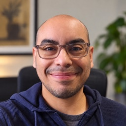

Luis Salas Gonzales is an engineering leader at Launch by NTT DATA in Everett, Washington, with over 15 years in software and a current focus on AI-enabled delivery and forward deployed engineering.
About
Luis Salas Gonzales (Luis Salas) is Associate Director of Digital Engineering at Launch by NTT DATA, based in Everett, Washington. He has worked in software for over 15 years, the last 12 delivering for US clients in energy, finance, healthcare, travel, retail, education and biotech, progressing from individual contributor to Associate Director inside one organization across eleven years and nine client engagements. His recent work applies agentic workflows and multi-agent tooling to large legacy estates, and he holds the OpenAI Forward Deployed Expert bootcamp credential, the Cursor Partner FDE Bootcamp accreditation and ten OpenAI Partner certifications (2026). He studied psychology at the Pontificia Universidad Católica del Perú.
Work
- Platform engineering: led the internal developer platform pod of a multi-team platform programme, delivering working Backstage and EventCatalog instances across the client's existing repositories. Then used skills and multi-agent AI flows to roll changes across a large estate of legacy repositories, work the client had no in-house practice for yet.
- Energy and utilities: team lead in a programme of about six teams that rebuilt a customer self-service portal as React and Next.js micro frontends on a modernized Java backend, with automated testing, quality gates, feature flags and blue/green releases. Some flows shipped in five or more languages.
- Education and professional services: front-end team lead for an ML-based coaching platform, where learners answer on camera and their words are scored against the intents each lesson expects. It shipped and is live.
- Retail: first team lead role, on the front end of a multi-brand e-commerce platform, setting delivery playbooks with the architects and running the team's Scrum and code review.
- Internal AI: front-end and platform engineer on a retrieval-augmented chat assistant for a company event, built by about six people in five weeks.
- Earlier, as an engineer: front-end and full-stack work for clients in travel, finance, healthcare and biotech.
Volunteer
- Civic tech (volunteer): UI lead for a free tool that helped Peruvian voters filter election candidates by public records. Moved its API to serverless functions and published it as an Android app, which reached 7,814 installs around the 2021 election. The code is public on GitHub.
Credentials
- Forward Deployed Expert, FDE Bootcamp completion, OpenAI, 2026
- Partner FDE Bootcamp accreditation, Cursor, 2026
- GenAI Academy: Green Belt, NTT DATA, 2026